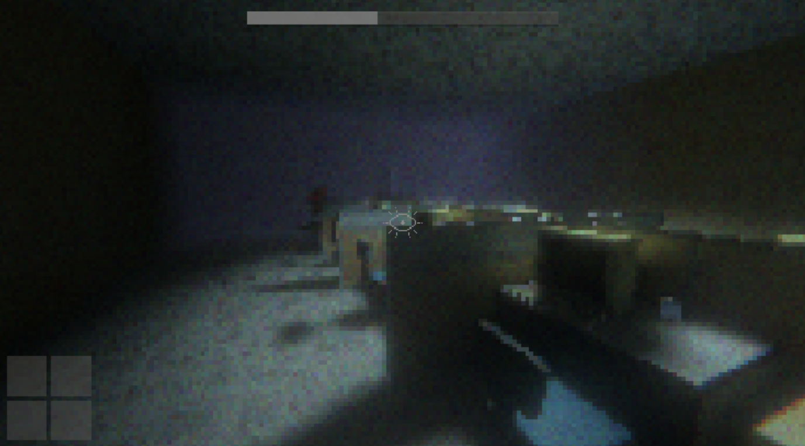

Project: Office Hours
Inspired by visuals of games in Playstation 1 era, Office Hours was developed for Scream Jam 2020 on itch.io in 10 days with a team composed of VGDC members. Maintain your sanity while trying to escape the horrors of the office by closing your eyes, and not looking at anything that might want to get you!
Utilizing C# and Unity Game Engine, I developed the monster AI, the player's sanity system, as well as other components of the game. The AI was created based off a finite state machine that encompassed 3 primary states of patrolling, hunting, and searching. The patrolling was created based off predetermined nodes, similar to a cyclic directed graph that has directed edges to the next node, or destination. By utilizing Unity's NavMesh, or Navigation Mesh render meshes, the AI was able to pathfind and traverse the level freely, while avoiding any obstacles that would block its path. All art assets were created in Blender, and imported into Unity.